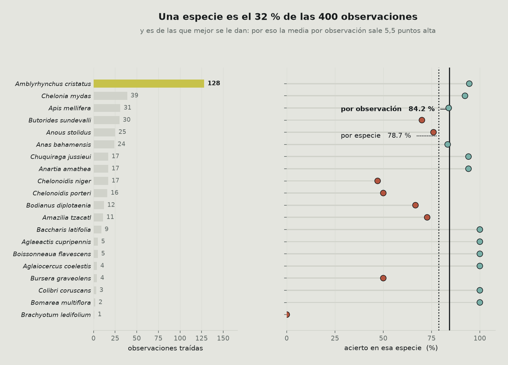
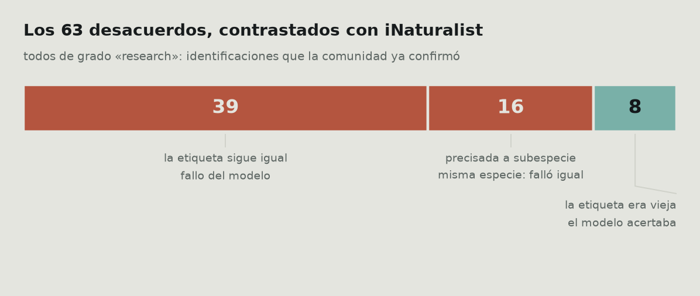
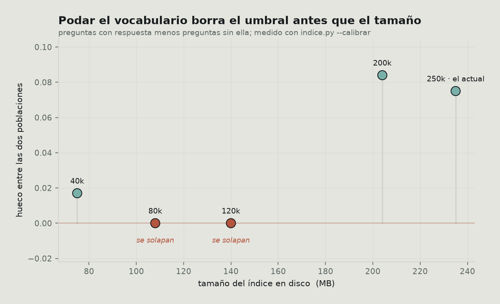

Riksi
Abrir la cámara
Riksi
Abrir la cámara
Tres proyectos, una lección: casi todas mis cifras estaban infladas
Diego Fernando Lojan Tenesaca · sobre Riksi, riksi-radar y yachaq
Entrené un clasificador de 100 especies de fauna ecuatoriana, monté un pipeline para verlo trabajar sobre observaciones reales, y le puse un agente encima. Tres repositorios, unos tres meses.
Este post no va de cómo los construí. Va de que cada vez que medí algo en serio, el número bajó — y de que ese es el trabajo, no un contratiempo.
Van cuatro casos. En los cuatro la primera cifra era defendible, estaba publicada y era engañosa.
El montaje
Lo justo para que se entienda el resto:
| riksi | EfficientNet-Lite0, 100 especies, 3,8 MB en int8. Corre en el navegador con ONNX Runtime Web |
| riksi-radar | Kafka → el modelo → DuckDB → dbt. Trae observaciones nuevas de GBIF y las clasifica sin ver la etiqueta |
| yachaq | Un agente sobre lo anterior: RAG, memoria, servidor MCP |

El modelo acierta 79,8 % top-1 sobre 1000 imágenes de validación. Esa cifra está bien medida y no es ninguna de las que van a caerse.
Lo que sí conviene decir de entrada es cómo llegó a 3,8 MB, porque es la única decisión del proyecto que salió gratis:

Ese es el trato: 0,4 puntos de acierto por un modelo 3,5 veces más pequeño. En un clasificador que tiene que descargarse en el navegador de alguien con datos móviles, no hay discusión.
Caso 1 · «El modelo mejora fuera de su reparto»
Las imágenes de validación salen del mismo reparto que las de entrenamiento: mismas fuentes, mismos fotógrafos, mismo sesgo de encuadre. Un 79,8 % ahí responde a una pregunta bastante estrecha, y no es la que importa. La que importa es qué pasa cuando llega una foto que nadie eligió.
Por eso monté el radar. La idea es simple: coger observaciones que se subieron a GBIF después de entrenar, de gente distinta, y pasar cada foto por el modelo sin dejarle ver la etiqueta. Después se comparan.
400 observaciones. 337 aciertos: 84,2 %.
Seis puntos por encima del banco de validación. Lo escribí en el README con la palabra «sube» en negrita.
Está mal. No la aritmética — el sesgo.

El panel izquierdo es el problema: una sola especie, la iguana marina, es 128 de las 400 observaciones. Las tres primeras juntas son la mitad del conjunto, y de las 100 especies que el modelo conoce solo aparecen 20.
La ciencia ciudadana no muestrea uniformemente. La gente fotografía lo que ve, y en Galápagos ve iguanas marinas. Ese 84,2 % es sobre todo la nota del modelo en una especie, repetida 128 veces.
Y mirando el panel derecho se ve por qué eso infla el número y no lo hunde: la iguana marina está entre las que mejor se le dan (94,5 %). El conjunto está dominado por un caso fácil.
Promediando por especie en vez de por observación —dando el mismo peso a la iguana que a la tortuga que sale tres veces:
| acierto | |
|---|---|
| por observación | 84,2 % |
| promediando especies | 78,7 % |
Son dos líneas de SQL de diferencia:
-- por observación: cada foto pesa lo mismo
select avg(coincide::int) from observaciones;
-- por especie: cada especie pesa lo mismo
select avg(tasa) from (
select especie, avg(coincide::int) tasa
from observaciones group by especie
);Y ahí está lo interesante: 78,7 % en campo contra 78,0 % en el banco. El modelo no mejora fuera de su reparto. Se comporta igual.
Que es una conclusión más aburrida y mucho más creíble. «No hay deriva» es un resultado; «mejora en producción» era un artefacto de cómo promedié.
Si vas a publicar una sola cifra sobre datos de ciencia ciudadana, promedia por clase. La media por observación mide la distribución de tus datos tanto como tu modelo.
Por qué el pipeline tiene Kafka
Una objeción razonable: 400 observaciones caben en un CSV. ¿Para qué Kafka?
Porque el número real no es 400. GBIF recibe unas 130.000 observaciones diarias solo de Ecuador, y de esas el 1,6 % cae en las cien especies que el modelo conoce — unas 6.000 al día. Las 400 son un corte para medir, no el caudal.
Aun así, la lección de montarlo fue otra. Kafka no arrancaba, y el error apuntaba a un sitio equivocado:
advertised.listeners cannot use the nonroutable meta-address 0.0.0.0Yo ya había sobreescrito advertised.listeners. Me costó cuatro intentos ver que la queja no era por ese, sino por el listener del controlador, que también estaba en 0.0.0.0 y del que Kafka deriva su dirección anunciada:
# el que importa es el segundo, no el primero
listeners=PLAINTEXT://0.0.0.0:9092,CONTROLLER://localhost:9093
advertised.listeners=PLAINTEXT://localhost:9092Y una segunda, más silenciosa: Kafka daba al consumidor por muerto. Por defecto entrega 500 registros por poll() y espera el siguiente en cinco minutos. Descargar y clasificar 500 fotos lleva mucho más, así que Kafka reasignaba las particiones y el commit fallaba con «the group has already rebalanced» — perdiendo el trabajo ya hecho.
consumidor = KafkaConsumer(
TEMA,
max_poll_records=20, # lotes que sí caben en el intervalo
max_poll_interval_ms=900_000,
enable_auto_commit=False, # se confirma al terminar el lote, no antes
)El enable_auto_commit=False es lo importante: con confirmación automática, Kafka marca como procesado lo que aún estás descargando, y si el proceso muere a la mitad esas observaciones no vuelven nunca.
Caso 2 · Los desacuerdos que no eran del modelo
Quedaban 63 observaciones donde el modelo y GBIF discrepaban. Tres explicaciones posibles: falló el modelo, la observación está mal identificada, o la foto no muestra lo que dice el registro.
Escribí en el README que el pipeline no decide cuál, y que las tortugas de Galápagos que salían repetidas eran «taxonomía en disputa entre biólogos».
Me lo inventé. Sonaba plausible y no lo comprobé.
Resulta que hay una cuarta explicación, y es comprobable: GBIF publica instantáneas periódicas, no un espejo en vivo de iNaturalist. Una observación que iNaturalist ya corrigió puede seguir en GBIF con la identificación vieja.
Se verifica en dos saltos. GBIF guarda el identificador de iNaturalist en
catalogNumber, así que se puede preguntar cuál es la identificación de hoy:
def _en_inaturalist(clave_gbif):
oc = _pedir(f"{GBIF}/occurrence/{clave_gbif}")
id_inat = oc.get("catalogNumber") # el enlace a la fuente
d = _pedir(f"{INAT}/observations/{id_inat}")
o = d["results"][0]
return {"taxon_hoy": (o.get("taxon") or {}).get("name"),
"grado": o.get("quality_grade"),
"identificaciones": o.get("identifications_count", 0)}(El parámetro photo_id de la API de iNaturalist parecía el camino corto. No filtra: devuelve los 382 millones de resultados y ya. Se ignora en silencio.)
Los 63, dos minutos de peticiones. 24 tienen hoy otra etiqueta.
Pero ahí hay una trampa que casi me como. No todos los cambios significan lo mismo:
| cambio | qué es |
|---|---|
Anous stolidus → Anous stolidus galapagensis | refinamiento: se precisó la población, la especie es la misma, el modelo falló igual |
Chelonoidis porteri → Chelonoidis niger porteri | otra especie: pasó a colgar de C. niger |
En el segundo caso el modelo había dicho Chelonoidis niger. Bajo la taxonomía de hoy, acertó. La tortuga de Santa Cruz pasó a ser subespecie de C. niger y GBIF aún tenía la versión anterior.
Contarlos por separado es toda la diferencia entre un hallazgo y un autoengaño, así que la lógica que juzga es lo único con test de verdad:
def _juzgar(caso, hoy):
gbif, dice, ahora = caso["gbif"], caso["modelo"], hoy["taxon_hoy"]
if ahora == gbif: return "sigue igual"
if _es_hijo(ahora, gbif): return "precisada"
if ahora == dice or _es_hijo(ahora, dice): return "el modelo tenía razón"
return "cambió de especie"_es_hijo compara por palabras y no con startswith, que daría por buena una coincidencia a media palabra:
def _es_hijo(taxon, especie):
partes, base = (taxon or "").split(), (especie or "").split()
return len(partes) > len(base) and partes[:len(base)] == base
assert not _es_hijo("Anous stolidusa", "Anous stolidus")
assert not _es_hijo("Anous stolidus", "Anous stolidus") # ni hija de sí misma
assert _es_hijo("Chelonoidis niger porteri", "Chelonoidis niger")El resultado:

Ocho de 63 no eran fallos. Y los 63 son de grado research en iNaturalist — identificaciones que la comunidad ya confirmó—, así que los otros 55 no tienen dónde escudarse.
Y aun así hay que rebajarlo. Las ocho son del mismo taxón. Descontarlas sube la media por especie de 78,7 % a 81,2 %, pero eso arregla una especie de veinte y ninguna otra: es el sesgo del caso 1 entrando por otra puerta. La cifra que seguiría publicando es 78,7 %.
Lo que sí deja es un dato reutilizable: GBIF tenía desactualizado el 13 % de los registros que miré. Cualquiera que entrene con datos de GBIF sin contrastarlos está heredando ese desfase.
Caso 3 · El umbral que había puesto a ojo
El agente tiene un RAG sobre las fichas de las 100 especies. La pregunta de siempre: ¿a partir de qué similitud una ficha recuperada es relevante?
Puse 0,5. Número redondo, sin ninguna razón.
Lo que hay que medir no es la similitud media, sino si las dos poblaciones se separan: las preguntas que el corpus puede responder contra las que no. Si sus distribuciones se solapan, no hay umbral bueno — el problema no es el número, es que el índice no distingue.
def mejor(p):
fragmentos, vectores = _cargar()
return float((vectores @ vectorizar([p])[0]).max())
buenas = sorted(mejor(p) for p in con_respuesta) # peor primero
malas = sorted((mejor(p) for p in sin_respuesta), reverse=True) # mejor primero
corte = round((buenas[0] + malas[0]) / 2, 2)
if buenas[0] <= malas[0]:
print("SE SOLAPAN: ningún corte las separa.")Lo que se compara es la peor de las buenas contra la mejor de las malas. Si esa comparación se invierte, no existe ningún umbral que funcione y el problema no es el número: es el índice.
Se separaban, con un hueco de 0,075. El punto medio cae en 0,44, no en 0,5.
Las preguntas «sin respuesta» son deliberadamente ajenas —«¿cuándo se estrenó Blade Runner?», «receta de arroz con leche»—: si el índice no las rechaza, no rechaza nada.
El bonus vino de intentar recortar el índice, que ocupaba 235 MB de los cuales 192 eran la tabla de vocabulario: 250.000 tokens para unos 50 idiomas, de los que este proyecto usa 8.403. Parecía dinero tirado.

Podando a 120.000 términos el índice adelgaza un 40 % y el umbral deja de existir: ya no hay hueco que partir. Sin medir la separación, ese recorte parece gratis — el sistema sigue respondiendo, solo que ya no sabe cuándo callar, que es lo único que impide a un RAG inventarse cosas.
Los ids intermedios no eran relleno de otros idiomas: son las subpalabras que sostienen el español. Cortarlas hunde las preguntas buenas más de lo que hunde las malas.
Caso 4 · 671 MB en un contenedor de 512
Este no es de medición, pero es el que más me enseñó.
El agente tenía que caber en un plan gratuito: 512 MB. Con fastembed, el proceso se iba a 671 MB solo por cargar el codificador. Fuera.

Reescribí la inferencia con ONNX Runtime a mano. Dos cosas la arreglaron. La primera, guardar los pesos como external data, que hace que onnxruntime los mapee desde disco en vez de copiarlos:
onnx.save(modelo, str(LIGERO / "modelo.onnx"), save_as_external_data=True, ...)
opciones = ort.SessionOptions()
opciones.enable_cpu_mem_arena = False # sin arena que crece y no vuelve
ort.InferenceSession(ruta, sess_options=opciones)Eso bajó a 457 MB en reposo. Pero el pico respondiendo llegaba a 467, y con 45 MB de margen un contenedor de 512 muere al primer pico. Por eso la segunda barra sigue en rojo aunque esté por debajo de la línea: el número que decide no es el de reposo.
La segunda: soltar la sesión al terminar cada tanda en vez de retenerla.
def vectorizar(textos):
with _candado:
try:
return _vectorizar(textos)
finally:
if SOLTAR:
_sesion.cache_clear()
gc.collect()Recargarla cuesta 0,93 s, así que el pico existe solo mientras se responde. 154 MB, con 358 de margen. Ese segundo por pregunta compra el RAG encendido en un servidor gratuito; antes había que apagarlo entero.
Y no es una aproximación: el coseno entre los vectores de las dos rutas es 1,0 y la diferencia máxima componente a componente es 0,0. Es el mismo cálculo.
Dos trampas por el camino, ambas silenciosas:
- El mean pooling va ponderado por la máscara de atención. Si promedias incluyendo el relleno, los vectores salen desplazados. No falla nada: el RAG simplemente recupera algo peor y le echas la culpa al modelo.
# mal: el relleno cuenta como si fueran palabras
v = salida.mean(axis=1)
# bien: solo los tokens reales
mascara = lote["attention_mask"].astype(np.float32)[:, :, None]
v = (salida * mascara).sum(axis=1) / np.maximum(mascara.sum(axis=1), 1e-9)enable_padding()sin argumentos rellena hasta 512 tokens. Una inferencia que tarda 0,2 s pasa a tardar un minuto, y no hay ningún aviso. Hay que pasarledirection="right", pad_id=1, pad_token="<pad>".
También probé cuantizar el codificador a int8, como el clasificador. Reduce el disco pero no la RAM: 252 → 135 MB en disco, y 395 → 397 en memoria, porque onnxruntime descomprime los pesos al cargarlos. Y el hueco del corte se estrechaba de +0,101 a +0,085. Descartado.
Lo que sí funcionó a la primera (poco)
Para no dar la impresión de que todo se cayó:
- Cuantizar el clasificador a int8 cuesta 0,4 puntos y baja el modelo de 13,5 a 3,8 MB. La mejor relación del proyecto.
- Promediar la imagen con su espejo da 0,2 puntos por duplicar el tiempo de respuesta. Medido, y no implementado — medir para descartar también cuenta.
- LangGraph contra una orquestación a mano: 95 sentencias contra 55, 31,0 s contra 18,4 s. Pero LangGraph reanuda desde el checkpoint en 0,0 s y la mía no. Con dos nodos no compensa; con quince y trabajo caro que no quieres repetir, sí. Me quedé con la mía y dejé la comparación en el repo.
Y una decisión de ingeniería que sí pagó: el agente corre sobre proveedores gratuitos en cascada —Groq, Mistral, Cohere y tres más—, cada uno con su límite. Cuando uno devuelve 429, la petición pasa al siguiente con el mismo historial. El fallo obvio que cometí: los tres ayudantes empezaban por el mismo proveedor y se atropellaban entre ellos. Arrancando cada uno en un punto distinto de la cascada, 15 s → 7 s.
Lo que me llevo
Una cifra que sube es sospechosa. Las cuatro veces que un número me gustó, estaba midiendo mi conjunto de datos y no mi modelo.
Promedia por clase. En datos de ciencia ciudadana, la media por observación es casi una descripción de qué animales son fotogénicos.
Comprueba la anécdota que suena bien. «Taxonomía en disputa entre biólogos» sonaba a que yo sabía de qué hablaba. Eran dos peticiones HTTP averiguar que era falso, y la verdad resultó más interesante.
Distingue tipos de cambio antes de contarlos. 24 etiquetas cambiadas parecían 24 fallos ajenos. Eran 8. Los otros 16 eran míos y se disfrazaban de iguales.
Un umbral sin la separación medida es decoración. Y si el sistema aguanta con un umbral inútil, nadie va a enterarse.
Mide el pico, no el reposo. 457 MB cabían en 512 sobre el papel. En la práctica el contenedor moría.
Trabajo futuro
Lo honesto es decir dónde no llega:
- 400 observaciones y 20 especies no bastan para las otras 80. El radar tendría que correr semanas para tener algo por especie, y hasta entonces cualquier cifra por especie de las que salen tres veces es anecdótica.
- Un solo modelo, un solo país. Nada de esto dice si el patrón se repite en otro conjunto o con otra arquitectura.
- La verificación contra iNaturalist es de un día. Rehacerla dentro de seis meses diría cuál es el desfase típico de GBIF, que sería un dato de verdad útil para cualquiera que use esos datos para entrenar.
- El sesgo se mide, no se corrige. Saber que una especie es el 32 % no arregla que el modelo tenga poco con qué demostrarse en las otras 80.
Los tres repos están abiertos, y cada cifra de este post sale de un fichero que está en ellos —hay un --comprobar en cada módulo que lo verifica: riksi · riksi-radar · yachaq